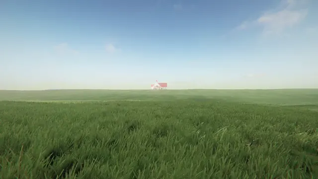
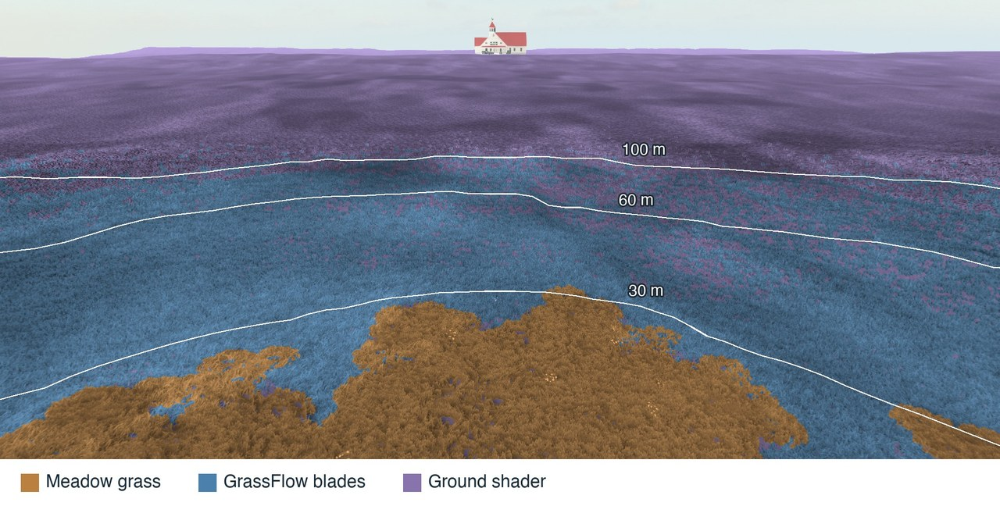
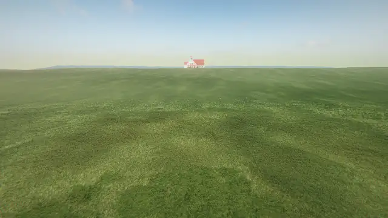
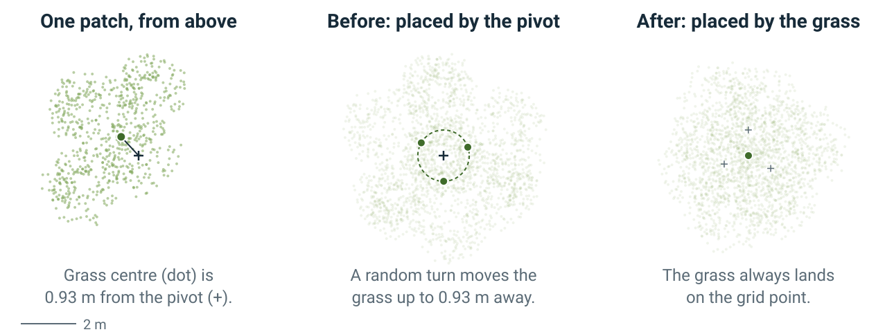
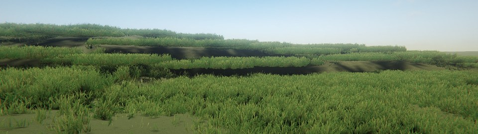
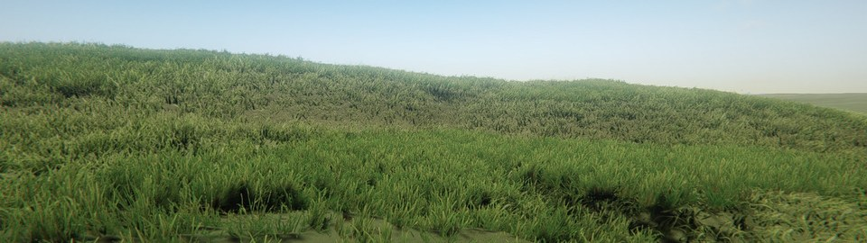
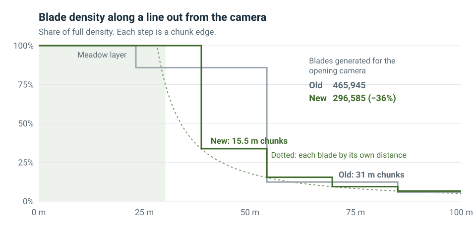
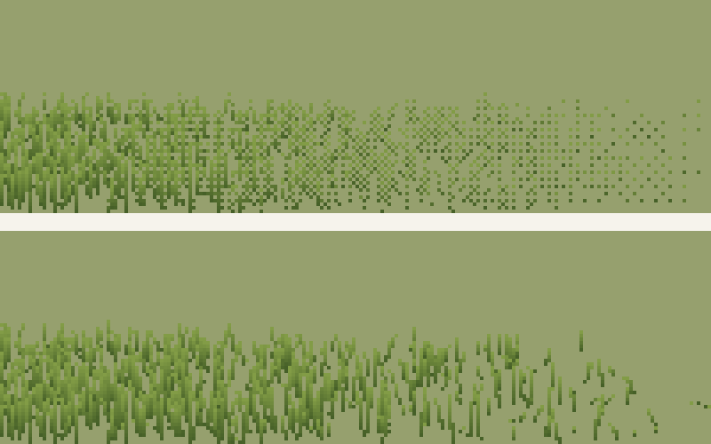

The goal
Part of Farsight takes place out in a huge field, walking towards a house in the middle of it. The grass needed to look good right at your feet, keep going all the way to the horizon, and stay cheap enough for low-end machines.
How it works
No single grass system did all of that, so the field is three layers, each covering a different distance. All three read the same colour, wind and cloud values, so you can't see where one stops and the next one starts.
| Layer | Distance | Drawn by |
|---|---|---|
| Meadow grass | 0 to 30 m | The Vegetation Engine, drawn with GPU Instancer Pro |
| Grass blades | 30 to 125 m | GrassFlow, which builds blades on the GPU |
| Ground shader | Everywhere, on its own past 125 m | A custom shader that paints grass onto the terrain |
1. Three layers
The meadow grass is detailed but expensive, so it only covers the 30 metres around you. GrassFlow's blades are cheap enough to cover the middle distance, and between 70 and 125 metres they blend into the ground shader, which carries on to the horizon.

Cloud shadows are a light cookie: a tiling texture the sun shines through, drifting with the wind. GrassFlow colours its blades per vertex and never reads the cookie, so I added a sample of it to GrassFlow's shader, through the same projection as the sun. One shadow now crosses all three layers.
float2 uv = ComputeLightCookieUVDirectional(_MainLightWorldToLight, positionWS,
float4(1, 1, 0, 0), URP_TEXTURE_WRAP_MODE_NONE);
float cookie = SAMPLE_TEXTURE2D_LOD(_MainLightCookieTexture, sampler_MainLightCookieTexture, uv, 0).r;
2. Grass that follows you
The meadow grass comes in patches about 6 metres wide. They sit on a grid that moves with you, and each grid cell picks its patch's position, rotation and size from a hash of its world position. The same spot always gets the same patch, so nothing pops as you walk, and the cost doesn't grow with the size of the field.
The first version had bare holes in it. Each patch's grass sits 0.93 m off its pivot, and patches were placed by their pivot. With a random turn, the grass could land anywhere on a circle around its grid point, so two neighbours turned away from each other left a gap. Placing each patch by the centre of its grass instead took the bare ground within 18 m of the camera from 3.35% to 0.32%. That sounds small, but a two metre bald spot is obvious at eye level.

Slopes were the other problem. A flat 6 metre patch on a bank sinks into the ground on one side and hangs over the edge on the other. Each patch now samples the ground at nine points, fits a plane through them (least squares) and tilts to match, up to 20 degrees. If the ground still strays more than 15 cm from that plane, like on the edge of a bank, the patch is skipped and the GrassFlow blades fill in.


3. Handing over
Where the meadow grass is, the GrassFlow blades need to stay out of the way, or you get two layers of grass on top of each other. Every time the patches move, the meadow writes a 96 by 96 map of where it actually covers the ground, about 68 m across. GrassFlow skips any chunk the map covers completely, and in the rest it shrinks blades to nothing wherever the map says the meadow is. The spots the meadow skipped keep their blades, which is the blue inside the orange in the tinted picture above.
4. Drawing less
GrassFlow splits the field into chunks and picks one density for each whole chunk, based on its edge nearest the camera. With the default 31 metre chunks, a chunk starting 23 m away was drawn at 86% density all the way across, out to 54 m. Halving the chunk size, and adjusting how quickly density drops off, made it generate about 36% fewer blades for the same look. The new settings actually keep full density a little further out, and save past 38 m. The trade-off is more chunks to cull each frame.

Later, making the falloff steeper took the frame in the editor from 40 to 31 ms with no visible change.
Far away, GrassFlow faded blades out by hiding them pixel by pixel. Once a blade is only a pixel or two wide, that leaves stray dark specks. Now each blade gets its own random cut-off and shrinks into the ground as a whole when the fade passes it.

Along the way I found that when GrassFlow counts its blades, it writes them into a tiny placeholder buffer, past its end. On Windows, D3D11 quietly throws away writes past the end of a buffer, so nothing went wrong. Metal doesn't promise that, and on a Mac those writes corrupted GPU memory. Skipping them while counting fixed it.
The diagrams were drawn with Python from data exported from the game. The tinted view was made by rendering each layer on its own and tinting the pixels in Python. Everything else was captured in Unity.